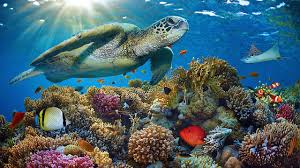

Coral reefs are underwater ecosystems characterized by reef-building corals. They are some of the most diverse ecosystems on the planet, hosting approximately 25% of all marine species despite covering less than 1% of the ocean floor. Often referred to as the "rainforests of the sea," coral reefs provide food, shelter, and breeding grounds for countless marine organisms.

There are three main types of coral reefs: fringing reefs, barrier reefs, and atolls. Fringing reefs grow directly from the shoreline, while barrier reefs are separated from land by a lagoon. Atolls are ring-shaped reefs that form around submerged volcanic islands. Each type provides unique habitats for a variety of marine life and plays a crucial role in protecting coastlines from wave erosion.
Learn MoreMarine invertebrates make up over 95% of all animal species in the ocean. This diverse group includes jellyfish, sea stars, sea urchins, crabs, lobsters, octopuses, and countless species of worms and mollusks. These creatures play vital roles in the marine food web, acting as both predators and prey. Many invertebrates, like filter-feeding sponges and mussels, help maintain water quality by filtering particles from the water.


Jellyfish have existed for over 500 million years, making them older than dinosaurs. Despite having no brain, heart, or bones, they are remarkably efficient predators. Sea stars, with their ability to regenerate lost arms, are keystone species in many marine ecosystems. Some species can have up to 40 arms and possess thousands of tube feet used for locomotion and capturing prey.
Coral bleaching occurs when corals expel their symbiotic algae due to stress from environmental changes, particularly rising ocean temperatures. Without these algae, corals lose their color and primary food source. While bleached corals can recover if conditions improve quickly, prolonged stress leads to coral death. The Great Barrier Reef has experienced several mass bleaching events, with some areas losing up to 50% of their coral cover.


Octopuses, squids, and cuttlefish belong to a group called cephalopods, known for their remarkable intelligence. Octopuses can solve puzzles, use tools, and even recognize individual human faces. They have three hearts, blue blood, and the ability to change color and texture in milliseconds for camouflage. These fascinating creatures continue to amaze scientists with their complex behaviors and problem-solving abilities.
Marine invertebrates are essential for healthy ocean ecosystems. Crustaceans like shrimp and crabs form the base of many food chains. Filter feeders like clams and oysters improve water quality by removing pollutants and excess nutrients. Sea urchins help control algae growth on coral reefs. The loss of these species would have cascading effects throughout the entire marine ecosystem, affecting fish populations and ultimately human food security.